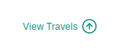

<ion-header style="background-color:#128C7E" class="ion-no-border">
  <ion-toolbar color="#128C7E" class="ion-no-border">
    <ion-grid class="header-grid">
      <ion-row class="ion-align-items-baseline">
        <ion-col class="ion-justify-content-start">
          <ion-buttons>
            <ion-back-button defaultHref="/tab1" style="color: white;"></ion-back-button>
          </ion-buttons>
        </ion-col>
        <ion-col class="ion-justify-self-center"> 
          <h1 style="text-align: center;font-size: 15px; color: #FFF;margin: 0; text-transform: capitalize;font-weight: bold;">{{user.value.firstname}} {{user.value.lastname}}</h1>
        </ion-col>
        <ion-col class="ion-justify-content-end">
          <ion-buttons class="ion-justify-content-end"> 
            <ion-button class="ion-justify-content-end" (click)="presentSearchModal()">  
              
            </ion-button>
          </ion-buttons>
        </ion-col>
      </ion-row>
    </ion-grid>
  </ion-toolbar>
</ion-header>
<ion-content [scrollY]="true">
  <ion-card>
    <ion-card-content>
      <ion-grid class="three-col-grid">
        <ion-row>
          <ion-col>
            <ion-avatar>
              
            </ion-avatar>
          </ion-col>
          <ion-col>
            <ion-row>
                <h2>{{user.value.title}}</h2>
            </ion-row>
            <!-- <ion-row>
              <h3>{{user.value.education}}</h3>
            </ion-row> -->
            <ion-row class="header-text">
              <ion-col size=".5"></ion-col>
              <ion-col><ion-text color="medium"> {{user.value.birthLocation}}</ion-text></ion-col>
            </ion-row>
            <ion-row class="header-text">
              <ion-col size=".5"></ion-col>
              <ion-col><ion-text color="medium"> {{user.value.residenceLocation}}</ion-text></ion-col>
            </ion-row>
          </ion-col>
          <ion-col size=".5">
            <ion-button fill="clear" (click)="presentUserSettings()" class="edit-button" *ngIf="canEditProfile">
              <ion-icon name="settings-outline"></ion-icon>
            </ion-button>
          </ion-col>
        </ion-row>
        <ion-row class="profile-info-row">
          <ion-col class="ion-align-self-end">
            <ion-row class="profile-info">
              <ion-text>Following</ion-text>
            </ion-row>
            <ion-row >
              <ion-text>{{user.value.followingCount}}</ion-text>
            </ion-row>
          </ion-col>
          <ion-col class="ion-align-self-end">
            <ion-row class="profile-info">
              <ion-text>Followers</ion-text>
            </ion-row>
            <ion-row >
              <ion-text>{{user.value.followerCount}}</ion-text>
            </ion-row>
          </ion-col>     
          <ion-col class="ion-align-self-end visited-col" >
            <ion-row class="profile-info">
              <ion-text>Places Visited</ion-text>
            </ion-row>
            <ion-row >
              <ion-text>{{visitedCount}}</ion-text>
            </ion-row>
          </ion-col>
          <ion-col class="ion-align-self-end to-visit-col">
            <ion-row class="profile-info">
              <ion-text>Future Visits</ion-text>
            </ion-row>
            <ion-row >
              <ion-text>{{toVisitCount}}</ion-text>
            </ion-row>
          </ion-col>
        </ion-row>
        <ion-row style="margin-bottom: 0;">
          <ion-col class="ion-align-self-center" size=".5"></ion-col>
          <ion-col class="ion-align-self-center ion-justify-content-start" size="1.7"><b>World Visited</b></ion-col>
          <ion-col>
            <circle-progress [percent]="visitedPercent" size="1"></circle-progress>
          </ion-col>			
        </ion-row>
      </ion-grid>
    </ion-card-content>
  </ion-card>
 
  <!-- <div class="map-search-container">
    <ion-searchbar (focusout)="show(true)"  (search)="searchvalue()" (focusin)="show(false)"  spellcheck="true"  [(ngModel)]="filterTerm"></ion-searchbar>
    <ion-list  *ngIf="hide == true">
      <ion-item *ngFor="let data of countries.Countries | filter:filterTerm" (click)="dataas(data)">
       
        <ion-label>{{data.name}}</ion-label>
      
      </ion-item>
      <ion-item *ngFor="let data of states.States | filter:filterTerm" (click)="dataas(data)">
       
        <ion-label>{{data.name}}</ion-label>
      
      </ion-item>
    </ion-list>
  </div> -->
  <div id="user-map" class="chartdiv" onload="onLoad()"></div>
</ion-content>
<ion-fab vertical="bottom" class="map-filter-fab">
  <ion-button fill="clear" (click)="presentUserTimeline()" class="map-filter">
      
  </ion-button>
</ion-fab>
